47. Пакетный менеджер - dnf
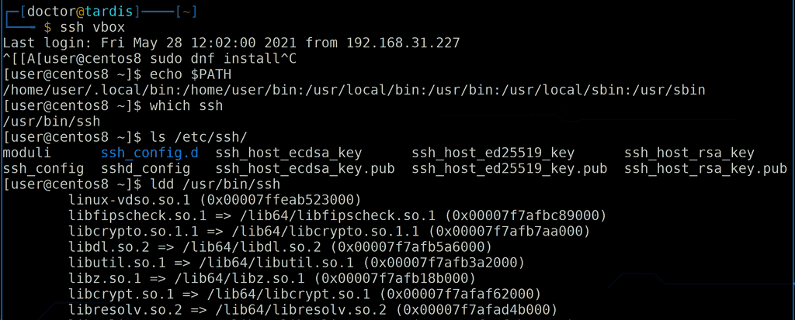
Мы с вами не раз устанавливали программы с помощью команды:
dnf install ...
но пора детальнее разобрать эту тему. Для начала вспомним, что мы вообще знаем о программах? Чаще всего под программой мы подразумеваем запускаемый файл. И мы знаем, что в переменной $PATH перечислены директории, в которых bash ищет эти запускаемые программы. Для примера возьмём ssh. С помощью команды:
which ssh
мы можем узнать, где именно находится запускаемый файл - /usr/bin/ssh. Однако одним этим файлом программа не ограничивается, у неё есть настройки в директории /etc/ssh:
ls /etc/ssh
Ещё есть библиотеки, при помощи которых работает эта программа, их мы можем узнать с помощью команды ldd:
ldd /usr/bin/ssh
Также у программ есть документация, которая лежит в /usr/share/doc, файл сервиса, если это демон, и много других файлов, которые лежат в разных директориях по всей системе.
Исходя из вышесказанного, при установке мы должны расположить все эти файлы по системе. Лучший способ распространять много файлов - в архиве. При этом, если я захочу удалить программу, мне же нужно будет все эти файлы поудалять? А значит надо вести учёт, что и куда было распаковано. Ну и помните, мы говорили, что есть сервисные пользователи - сервисы, по хорошему, должны работать не от рута, а от специальных пользователей. Т.е. если мы ставим веб сервер, то он должен работать от сервисного пользователя. А пользователи - это не файлы, их нужно создавать с помощью команды useradd. А значит не всегда достаточно просто распаковать архив, иногда бывает нужно ещё и запустить команду или скрипт, чтобы, например, добавить сервисного пользователя. Т.е. программы распространяются в виде архивов, но у этих архивов ещё могут быть скрипты и всякая информация о самом архиве. И такие архивы называют пакетами.
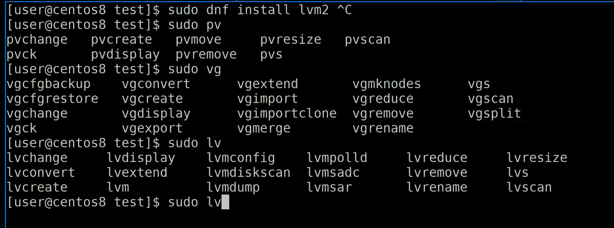
Когда говорят про установку программ на Linux-ах, речь идёт о пакетах - мы устанавливаем пакеты. При этом внутри одного пакета может быть сразу несколько программ, например, ставим один пакет lvm2 - а внутри pvcreate, vgcreate, lvdisplay и куча других запускаемых файлов, но все они относятся к программе LVM. При этом можно сделать пакет, внутри которого не будет исполняемых файлов, только конфиг файлы и скрипты - например, так можно распространять настройки. То есть не каждый пакет является программой.
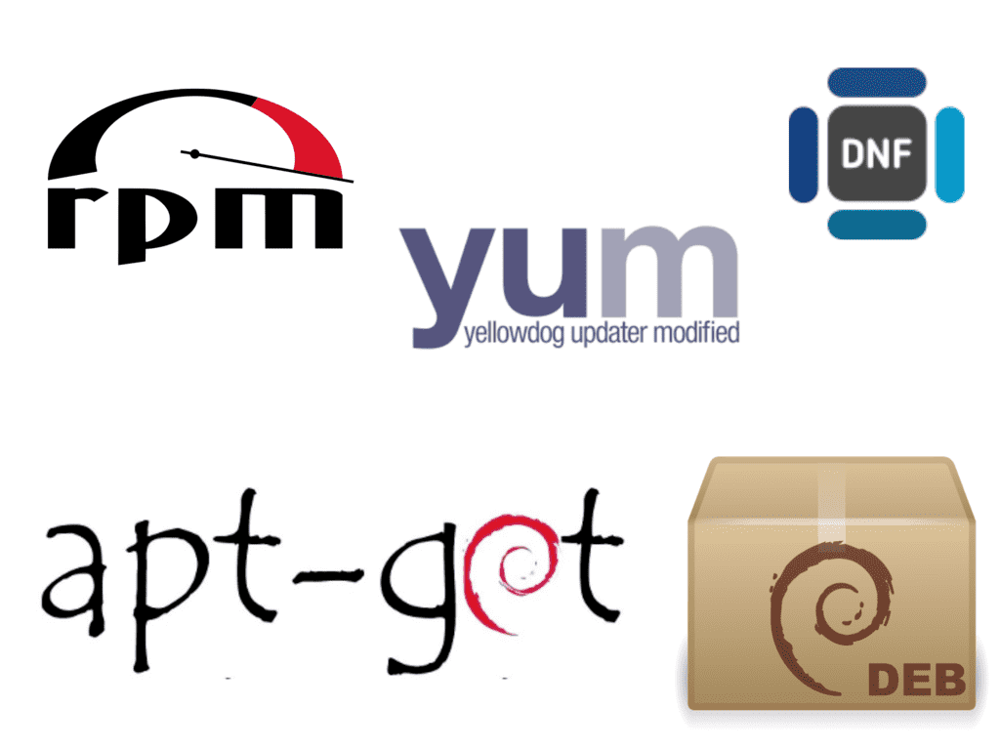
Для работы с пакетами есть программы, называемые пакетными менеджерами. Они устанавливают пакеты, удаляют их, обновляют, ведут учёт, выводят информацию - т.е. управляют пакетами. Пакетных менеджеров много, на разных дистрибутивах могут быть разные. К примеру, на Centos и многих RHEL-based дистрибутивах используются rpm, yum, dnf, а на Debian-based дистрибутивах, например, на Ubuntu, используется dpkg, apt, apt-get, aptitude. К тому же у самих пакетов могут быть различные форматы, они по разному собираются. На Debian-based дистрибутивах формат .deb, а на RHEL-based - .rpm.
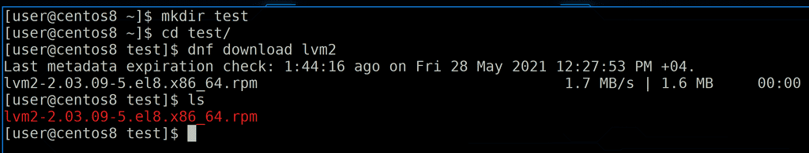
Для примера скачаем какой-нибудь пакет. Это можно сделать с помощью dnf download:
mkdir test
cd test
dnf download lvm2
ls
У нас скачался файл с расширением .rpm. В названии пакета указано название программы, её версия, дистрибутив, под который сделана - el8 - это centos 8, дальше архитектура, под которую собран пакет - в нашем случае под 64-битные процессоры, ну и расширение rpm.
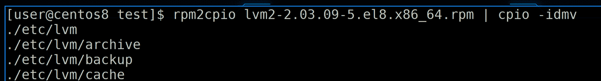
Как мы говорили, пакеты - это архивы, а значит их можно распаковать. Мы с вами изучали архиватор tar, но rpm пакеты архивируется другой утилитой - cpio. Воспользуемся ей, чтобы распаковать этот архив:
rpm2cpio lvm2-2.03.09-5.el8.x86_64.rpm | cpio -idmv
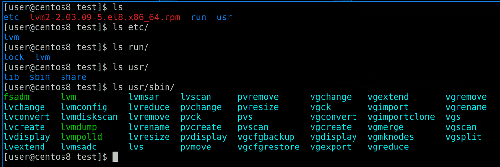
Из архива у нас вышли 3 директории - etc, run и usr. Ничего не напоминает? Правильно, это директории из корня. И когда мы устанавливаем пакет, он разархивируется в корень - в /etc копируется директория /etc/lvm, в /run копируется директория /run/lvm, а в /usr/sbin те самые файлы команд.
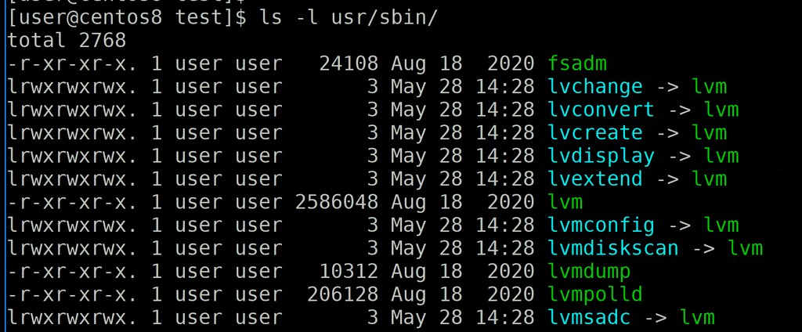
Причём можно заметить, что большинство файлов этого пакета в usr/bin - это просто символические ссылки, ведущие на одну программу.
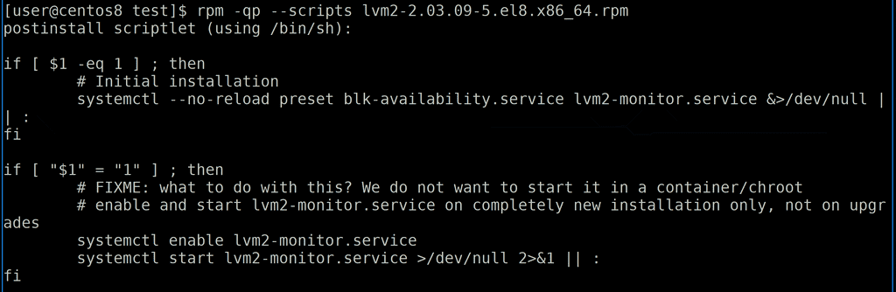
Мы ещё говорили, что кроме архива в пакете также есть скрипты. В .deb пакетах внутри самого пакета находятся 2 архива - в одном скрипты и информация о пакете, а в другом архив с файлами. Что касается .rpm пакетов, то тут информация и скрипты вшиты в сам пакет, и чтобы их увидеть, надо воспользоваться командой rpm. Например, чтобы увидеть скрипты, надо выполнить команду:
rpm -qp --scripts lvm2*
На первой строчке мы видим postinstall scriptlet - этот скрипт выполняется после установки пакета.
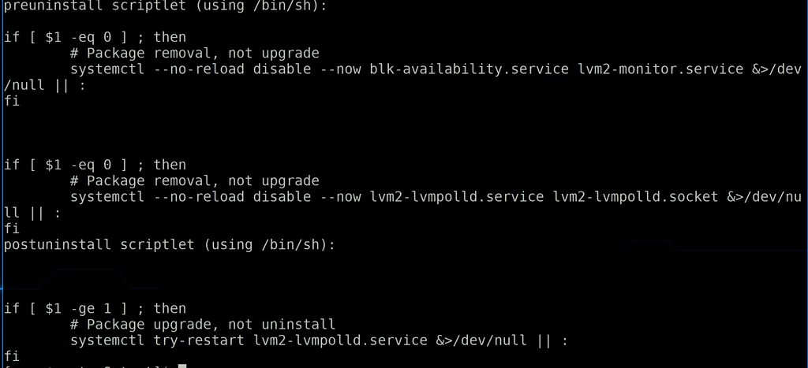
Чуть ниже также можно увидеть preuninstall scriptlet, а потом ещё один postuninstall - т.е. скриптов может быть несколько, какие-то выполняются до установки пакета, какие-то после. Причём, если обратить внимание, нижние скрипты вообще выполняются при удалении пакета, например, чтобы отключить лишние сервисы.
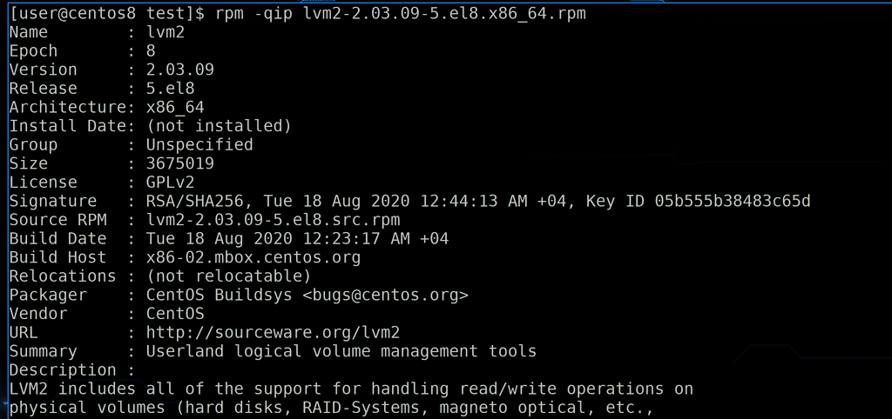
Ну и помимо скриптов пакет содержит информацию о себе, которую также можно увидеть с помощью утилиты rpm:
rpm -qip lvm2*
Наверху у нас та информация, которую мы видели в названии пакета - имя, версия, релиз и архитектура. Также тут указан Epoch - это тоже касается версии. Просто иногда разработчики софта могут менять нумерацию версии, либо вести её каким-то нестандартным образом. Тогда пакетному менеджеру бывает сложно понять, а какая версия пакета новее, какая старее. И вот epoch номер спасает в таких ситуациях.
Также в информации о пакете указан его размер, лицензия, время сборки, кто собирал пакет, ссылка, небольшое описание и прочая подобная информация.
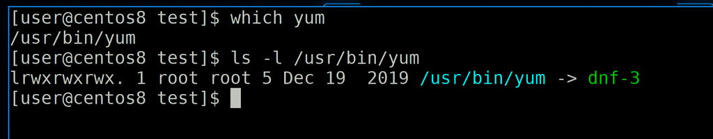
Хорошо, с тем, что из себя представляет пакет, мы разобрались. Поговорим о пакетных менеджерах. На Centos есть 2 основных пакетных менеджера - rpm и dnf. Часто в интернете вы можете натыкаться на команду yum - это также пакетный менеджер, но он использовался в предыдущих версиях Centos. Его переработали и выпустили новую реализацию - dnf. А yum остался как символическая ссылка на dnf, чтобы облегчить переход пользователей и не сломать инструменты и скрипты, работающие с yum:
which yum
ls -l /usr/bin/yum
Синтаксис во многом совпадает, поэтому на старых системах вы можете вместо dnf писать yum.
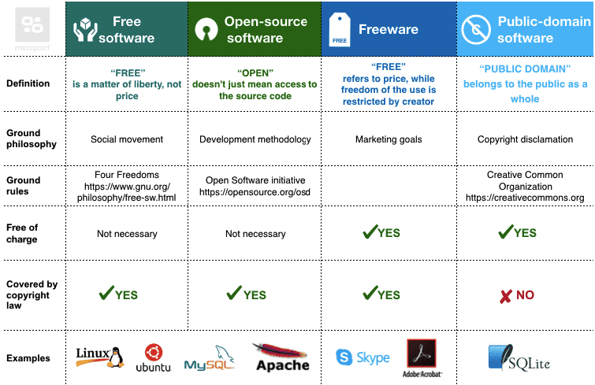
Чтобы увидеть разницу между rpm и dnf следует понять особенность разработки софта на GNU/Linux. Большая часть ПО под Linux системы сделана с открытыми и свободными лицензиями. Эти лицензии предполагают, что любой желающий может использовать, изменять и распространять программы, не спрашивая ни у кого разрешение, минуя всякую бюрократию. И когда разные разработчики пишут программы, им необязательно изобретать велосипед - они могут взять кусочек чужой программы. Обычно это библиотеки, а иногда и целые программы.
В итоге сотни программ могут использовать одни и те же библиотеки, одна программа может использовать другую, а другая третью и всё такое. Если всё встраивать в саму программу, то программа будет весить много и потреблять много ресурсов. А если делать общие библиотеки между программами, всё делить - то не придётся один и тот же код использовать в разных программах, в итоге программы занимают меньше места. Но при этом появляется понятие зависимостей: в самой программе может не хватать чего-то для работы, и ей для этого нужна другая программа или библиотека. Одни программы начинают зависеть от других. Если вы удалите одну библиотеку, могут перестать работать сотни программ. Или, скажем, у вас установлена библиотека версии 3, и вы пытаетесь установить программу, которая требует ту же библиотеку, но версии 2. Если вы замените новую библиотеку на старую, то могут перестать работать другие программы.
Т.е. пакеты зависят друг от друга, и зачастую недостаточно установить один пакет, нужно ставить несколько. И чтобы не ходить по разным сайтам в поисках их зависимостей и не скачивать пакеты по одному, разработчики дистрибутивов делают специальные сервера, где лежат десятки тысяч пакетов для их дистрибутива. Эти сервера называются репозиториями. Тем более лицензия позволяет распространять софт любому желающему. И вот среди разработчиков дистрибутива есть люди, которые постоянно проверяют определённый софт на новые версии, зависимости, проверяют стабильность и безопасность, после чего делают пакет с этим софтом и добавляют его в репозиторий. Такие люди называются мейнтейнерами.
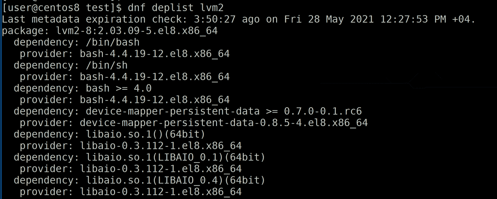
И они следят за тем, чтобы в рамках одной версии дистрибутива не было проблем. Зачастую бывает невозможно установить разные версии одной и той же библиотеки, а значит нужно выбрать определённую версию для дистрибутива, основываясь на стабильности, безопасности и том, что большинство софта требует именно эту версию. Список зависимостей можно посмотреть с помощью команды dnf deplist:
dnf deplist lvm2
Здесь мы видим, какие программы и библиотеки требуется для lvm2 и в каких пакетах они есть.
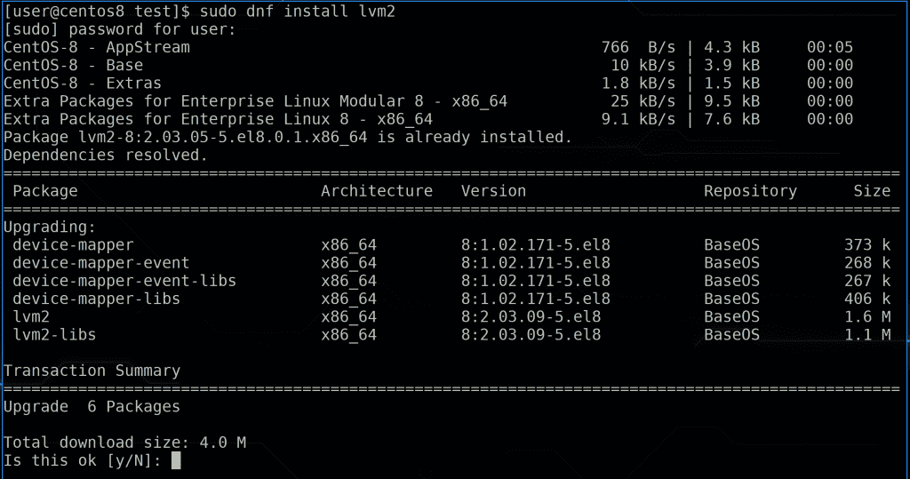
Но когда вы устанавливаете программу:
sudo dnf install lvm2
то вам не нужно беспокоиться о зависимостях, этим занимается пакетный менеджер. Он видит зависимости каждого пакета, он находит подходящие пакеты в репозитории и предлагает их установить. Кроме того, в данной ситуации dnf сказал, что этот пакет уже установлен, но его может обновить - и предлагает обновить его зависимости в том числе.
Если обобщить, нередко для работы одной программы нужна другая программа или библиотека. Есть сервера, называемые репозиториями, на этих серверах лежат пакеты. Пакетный менеджер может найти в репозитории нужный пакет и его зависимости, т.е. другие пакеты, и установить всё вместе.
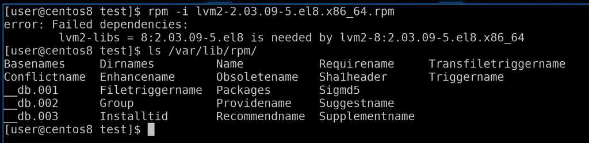
Но не каждый пакетный менеджер работает с репозиториями. dnf это умеет, а rpm нет. При этом rpm это главная утилита для работы с пакетами .rpm - она позволяет создавать пакеты, изменять и всё такое, т.е. это низкоуровневая утилита. И хотя она умеет устанавливать пакеты:
rpm -i lvm2-*
в большинстве случаев не стоит так делать. rpm может знать о зависимостях, но не может их решить - с rpm вам нужно вручную разбираться с ними. Т.е. зачастую лучше пользоваться dnf, но rpm это не бесполезная утилита - она предоставляет библиотеки для работы dnf, а также базу, где учитываются установленные пакеты и вся информация о них:
ls /var/lib/rpm
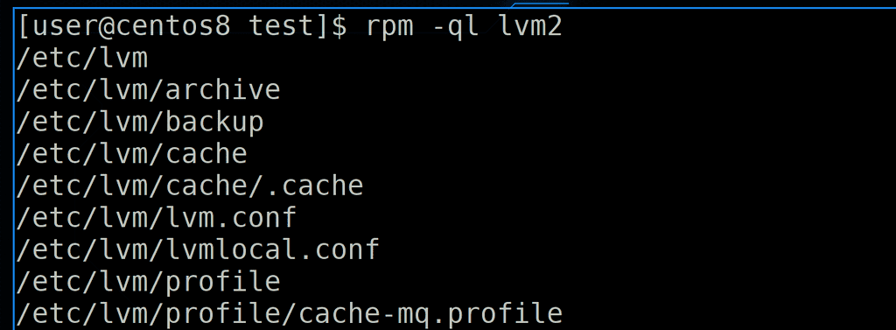
В базе rpm как раз хранится информация, а какие именно файлы и зависимости были установлены вместе с пакетом:
rpm -ql lvm2
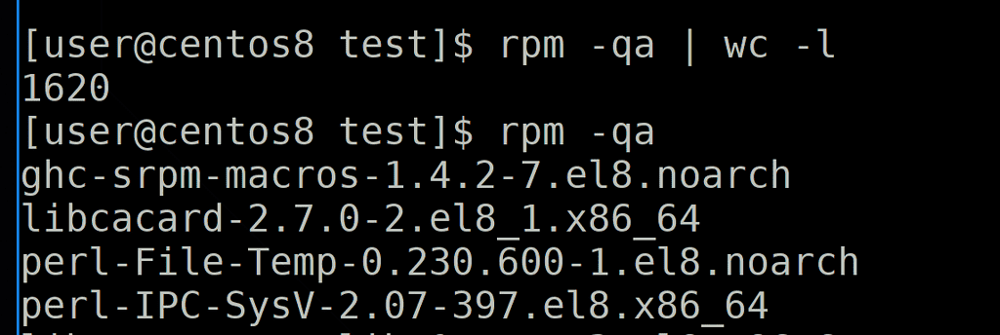
К примеру, rpm может вывести список всех установленных пакетов:
rpm -qa
Здесь -q - это сделать запрос, а - all - обо всех пакетах. До этого были ключи -ql - вывести список файлов пакета. Я не буду разбирать все ключи, потому что их очень много, но есть man и help, где всё детально расписано. Ну и можете почитать про топ 20 команд с rpm, чтобы иметь чуть больше представления об этом пакетном менеджере.
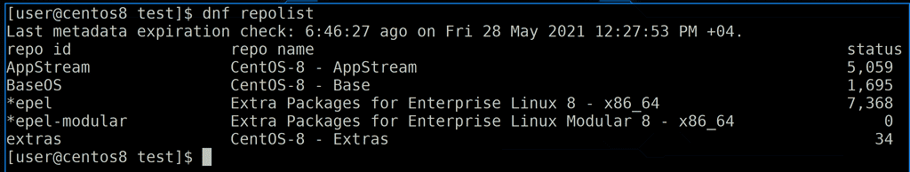
Сейчас же перейдём к dnf. Как мы сказали, dnf работает с репозиториями - с серверами, где лежат пакеты. Репозиториев может быть много:
dnf repolist
Есть основные репозитории, где лежит большинство пакетов дистрибутива. У одного дистрибутива может быть несколько репозиториев - это зависит от разработчика, кто как свои репозитории поделит. К примеру, здесь мы видим Base и AppStream. В Base лежат базовые пакеты для работы операционной системы, а в AppStream - всякий дополнительный софт. Кроме репозиториев от самого дистрибутива, бывают репозитории и от разработчиков программ. Разработчики дистрибутива больше заинтересованы в стабильности своей системы, и ради этого могут не добавлять свежевыпущенные версии программ. Ну и не всегда бывает время оперативно добавить программу в репозиторий, так как зачастую мейнтейнеры отвечают за сотни различных пакетов. А разработчики софта больше заинтересованы, чтобы пользователи получили более новую версию программы и ради этого они могут поднять свои репозитории, где сами будут следить за актуальностью софта. При этом в их репозиториях не содержатся все пакеты системы, а только сама программа и её зависимости. К примеру, у VirtualBox есть свои репозитории.
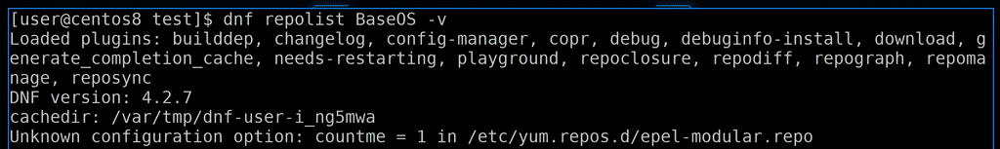
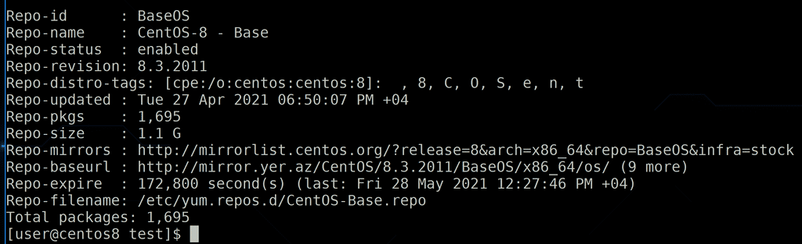
Чуть больше информации о репозитории можно получить с помощью команды dnf repolist -v:
dnf repolist BaseOS -v
Здесь мы видим, что статус репозитория - enabled, репозиторий включён в настройках dnf. Т.е. мы можем по необходимости временно включать и отключать репозитории, чтобы поставить программу именно из этого репозитория. Также мы видим количество пакетов в репозитории и его размер. Repo-mirrors - это зеркала - серверы, дублирующие содержимое этого репозитория. Они позволяют снизить нагрузку с основных серверов дистрибутива, а также физически они располагаются ближе к вашему региону.
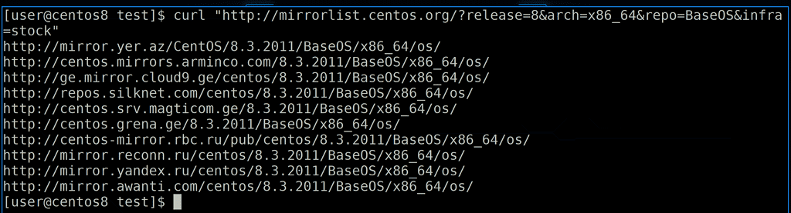
Скопируем ссылку и используем утилиту curl, чтобы посмотреть содержимое этой ссылки, хотя можно было увидеть это и через браузер. http - это протокол, который используют веб сервера, и именно он используется, когда вы заходите на сайты через браузер.
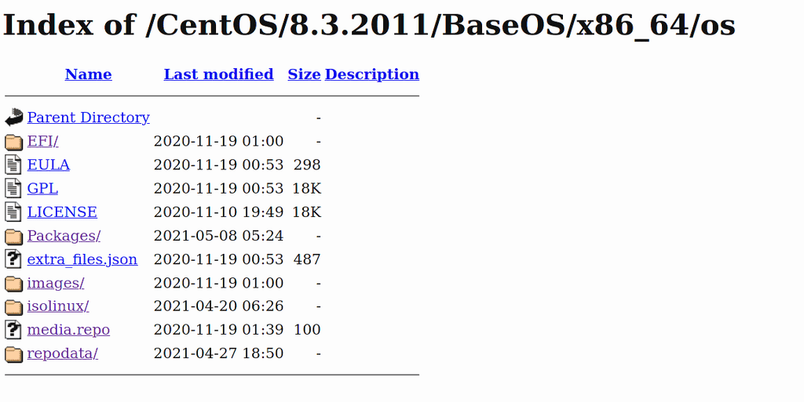
А Repo-baseurl содержит ссылку на репозиторий, который мы используем - как раз одно из зеркал. Здесь у нас сами пакеты в директории Packages и информация о репозитории в repodata. Как раз там хранится информация о всех файлах в репозитории, их зависимостях, версиях и т.п. За счёт этих файлов пакетный менеджер, ещё не установив сам пакет, уже знает, какие у него зависимости и в целом может вывести информацию о каждом пакете.
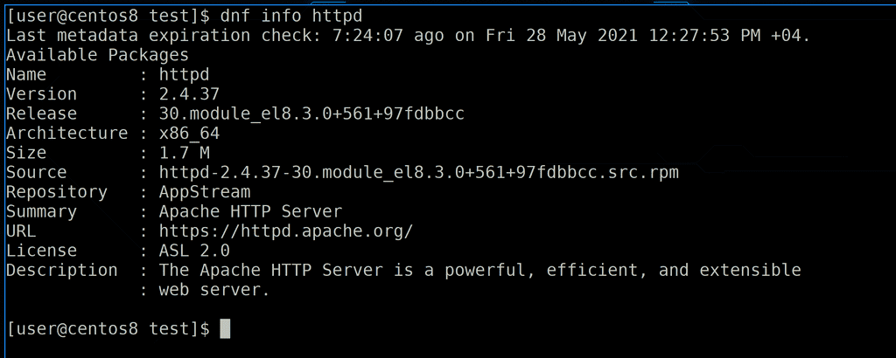
dnf скачивает информацию о каждом прописанном репозитории, благодаря чему он за доли секунд может вывести информацию о любом пакете, даже если он не установлен:
dnf info httpd
Здесь же можно увидеть, а в каком именно репозитории находится данный пакет - AppStream.
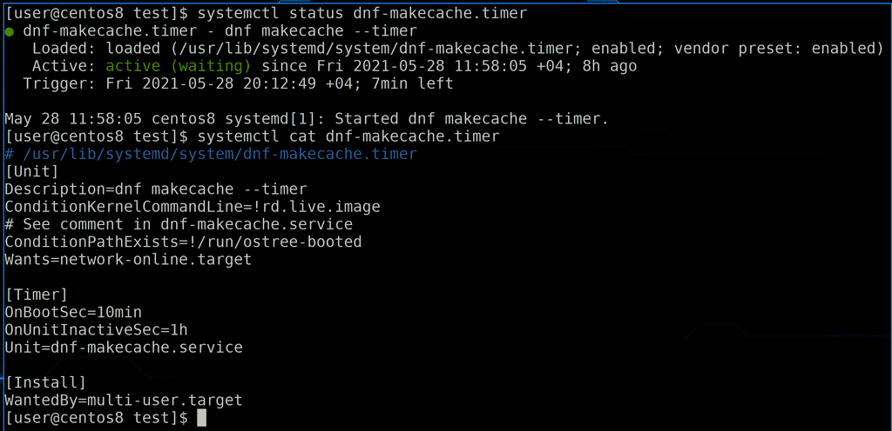
Но информация о репозитории может устаревать - каждый день в репозиторий могут добавлять новые версии пакетов, исправления багов и уязвимостей. Если dnf не будет постоянно обновлять информацию о репозиториях, то у него останется старая версия этой информации и он не будет знать о новых версиях пакетов. Поэтому в системе есть таймер:
systemctl status dnf-makecache.timer
systemctl cat dnf-makecache.timer
Как видно, примерно раз в час dnf запускает команду dnf makecache, что обновляет метаданные.
Кстати, можно создавать свои локальные репозитории, которые будут синхронизироваться с репозиториями дистрибутива. Это бывает полезно в компаниях, где много Linux серверов - вы можете держать один репозиторий и обновлять только его, а все остальные сервера будут брать пакеты из этого репозитория. Это поможет значительно сократить трафик в интернет и ускорить установку пакетов. Также полезно, когда интернета совсем нет. Кроме того, dvd диски и iso образы дистрибутивов также содержат репозитории, которые можно использовать при установке системы и после.
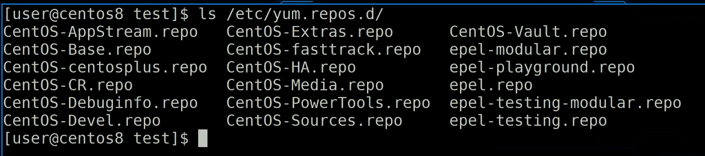
Для примера, добавим репозиторий. Это можно сделать несколькими способами - через саму команду dnf, либо создав файл. Файлы репозиториев лежат в директории /etc/yum.repos.d:
ls /etc/yum.repos.d
и заканчиваются на .repo.
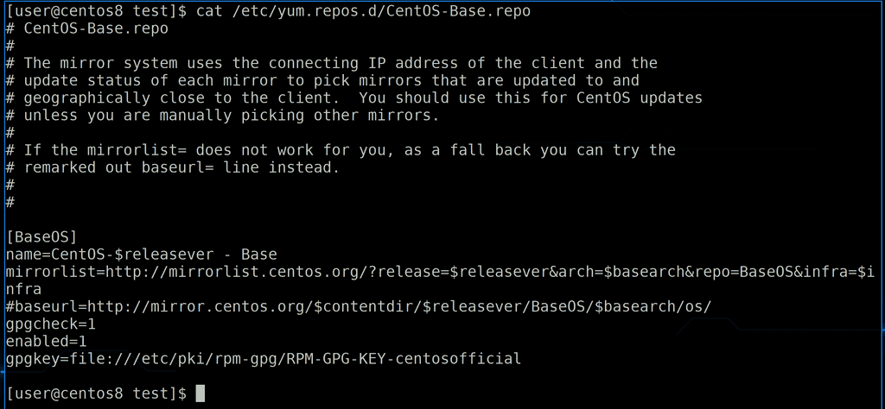
Посмотрим Base.repo:
cat /etc/yum.repos.d/CentOS-Base.repo
В квадратный скобках указан идентификатор репозитория, его и следующее поле - name - мы можем задать сами, это просто названия. mirrorlist - список зеркал - не у каждого репозитория могут быть зеркала, поэтому мы можем не указывать эту опцию. baseurl - это ссылка на репозиторий. В данном случае ссылка закомментирована, потому что прописаны зеркала, но если б их не было, нужно было бы указать свою ссылку. enabled - говорит о том, что данный репозиторий включён.
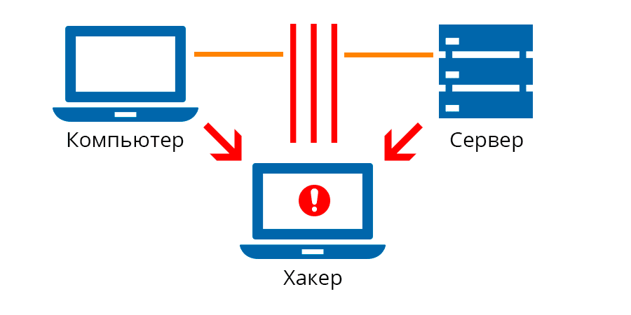
gpgcheck - проверка ключа и gpgkey - сам ключ. Дело в том, что зачастую репозитории находятся в интернете. И существует MITM атака, которую мы обсуждали при изучении ssh - кто-то может встать посреди трафика и обманывать нас, притворяясь нужным сервером. Если кто-то притвориться репозиторием, то мы будем скачивать и устанавливать пакеты с этого сервера, при этом даже не догадываясь, что устанавливаем изменённые пакеты, в которых могут быть вирусы и прочий нежелательный софт.
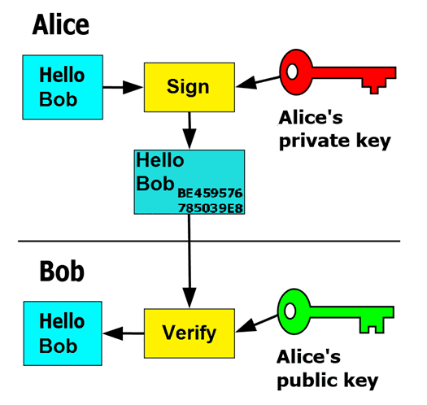
Поэтому репозитории и все пакеты в репозиториях подписываются специальным ключом. Этот ключ есть только у людей, которые добавляют пакеты в репозиторий, и называется приватным. Когда я хочу добавить чей-то репозиторий, владелец репозитория предоставляет мне другой ключ, этот ключ может быть на сайте репозитория, либо придти вместе с системой, т.е. он доступен всем, поэтому называется публичным. Так вот, разработчик подписывает репозиторий и пакеты приватным ключом и я, благодаря публичному ключу, могу убедиться, что это именно тот самый репозиторий или пакет. Если кто-то другой посередине подставит свой сервер, то он подпишет свой репозиторий другим приватным ключом, а значит я, благодаря другому публичному ключу, пойму, что это не тот сервер. Может по началу звучит сложно, но работает это довольно просто.
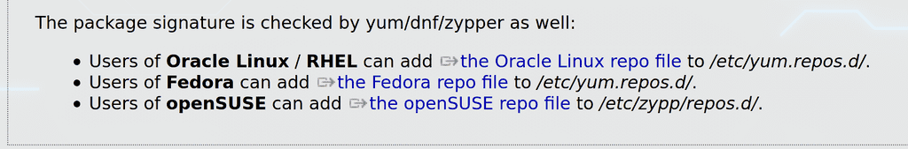
Добавим репозиторий VirtualBox-а. Идём на сайт virtualbox.org - Downloads - Linux distributions - и спускаемся в самый низ. Находим строчку - Users of Oracle Linux/RHEL - и нажимаем по ссылке.
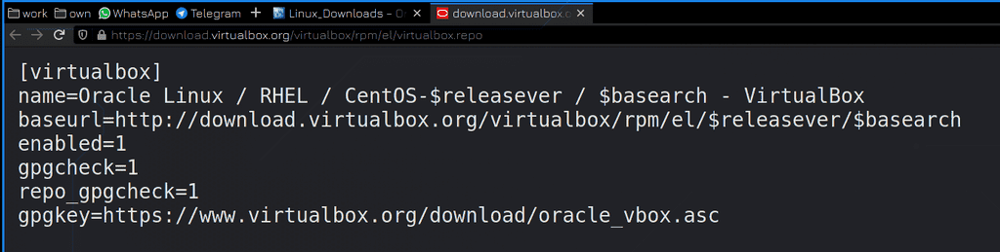
Нам откроется файл repo. По идее достаточно просто его скопировать в нужную директорию, но мы пойдём сложным путём, скопируем только ссылку.
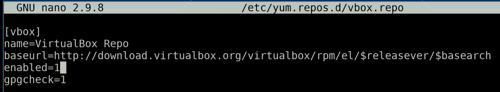
Создадим файл:
sudo nano /etc/yum.repos.d/vbox.repo
Зададим произвольные имена в квадратных скобках и name, вставим ссылку, добавим:
enabled=1
gpgcheck=1
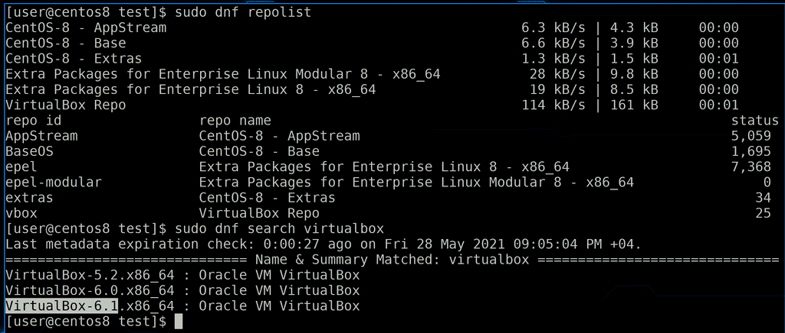
Посмотрим список репозиториев:
sudo dnf repolist
и в списке появился репозиторий vbox. Попробуем найти пакет virtualbox:
sudo dnf search virtualbox
И мы видим 3 подходящих пакета.
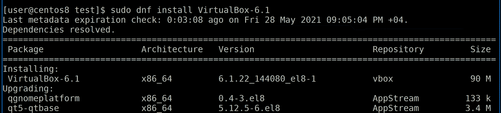
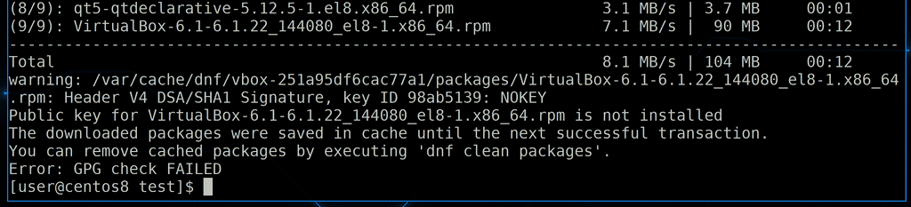
Попробуем установить пакет:
sudo dnf install VirtualBox-6.1
Установка запустилась, мы видим что этот пакет будет скачиваться с репозитория vbox, и видим все зависимости, которые подтягиваются с AppStream репозитория. Но как только дело дошло до установки пакета, dnf понял, что для virtualbox не установлен публичный ключ и остановил процесс.
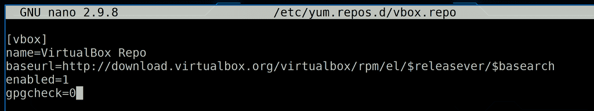
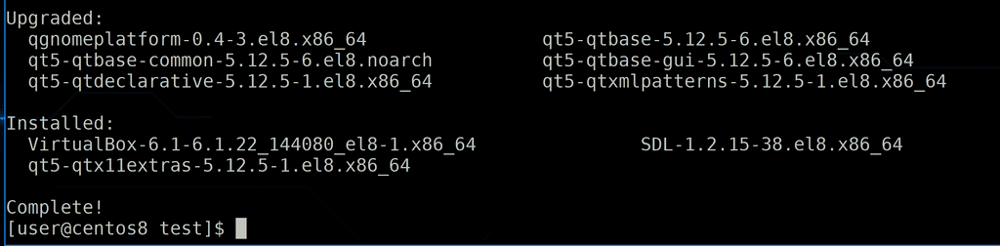
Мы можем отключить проверку пакетов или добавить ключ. Для интернет репозиториев отключать проверку не стоит, но в локальных иногда можно не заморачиваться с ключами. Попробуем отключить проверку - заходим в созданный файл:
sudo nano /etc/yum.repos.d/vbox.repo
и меняем gpgcheck=0. Затем заново запускаем установку. И она проходит успешно.
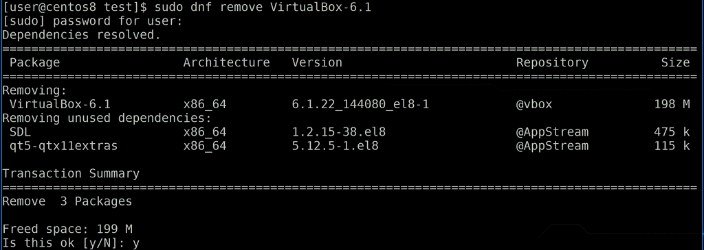
А для удаления пакета воспользуемся командой dnf remove:
sudo dnf remove VirtualBox-6.1
Теперь попробуем добавить ключ.
В том repo файле, который предложил virtualbox, в качестве ключа была предложена ссылка на файл на сайте виртуалбокса. Мы же, для большего понимания процесса, сделаем несколько иначе - скачаем ключ и добавим его в систему.
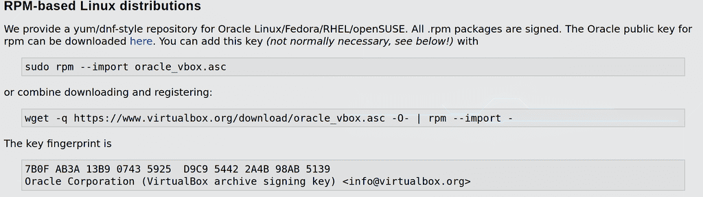
В предыдущей ссылке поднимемся чуть выше, где увидим команду:
rpm --import
Нам нужно скачать ключ, а потом импортнуть. Вторая команда делает это разом - wget скачивает файл с интернета, передаёт его через pipe команде rpm, которая импортирует. Можно сразу ввести эту команду, но для понимания разделим её на две части.
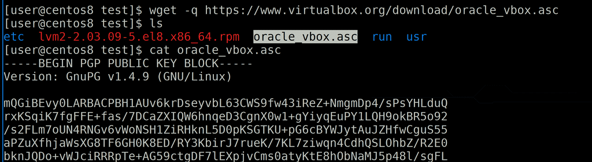
Для начала скачаем ключ:
wget -q https://www.virtualbox.org/download/oracle_vbox.asc
ls
Можем посмотреть содержимое ключа:
cat oracle_vbox.asc
Это текстовой файл, в котором большой набор символов.
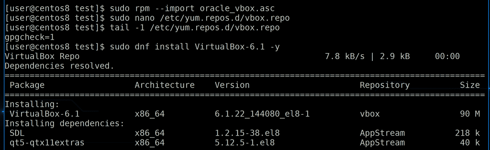
Теперь ключ нужно импортнуть:
sudo rpm --import oracle_vbox.asc
После этого не забудем заново включить проверку ключа:
sudo nano /etc/yum.repos.d/vbox.repo
gpgcheck=1
И попробуем заново установить виртуалбокс:
sudo dnf install VirtualBox-6.1 -y
На этот раз добавим ключ -y, чтобы он не спрашивал, уверены ли мы, что хотим установить. И снова установка прошла успешно.
Хорошо, с репозиториями разобрались. Но не для каждой программы есть репозиторий, и не каждый пакет есть в репозитории. Скажем, нам нужен определённый пакет, который есть в репозитории другого дистрибутива, либо в новой версии нашего дистрибутива. Но подключать их не стоит - пакетный менеджер может увидеть какие-то пакеты новее в другом дистрибутиве и попытаться обновиться. Тогда у нас часть пакетов обновится, часть останется и выйдет куча проблем с зависимостями. Поэтому надо стараться избегать использования сторонних репозиториев.
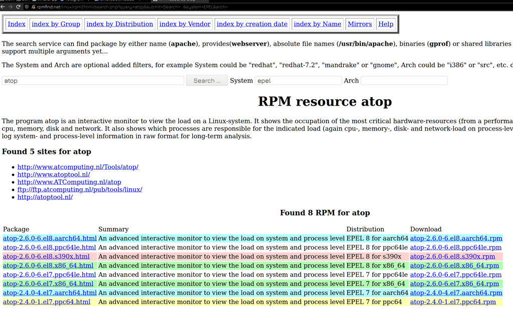
Попробуем найти как-то тестовый пакет и установить. Можно погуглить, либо зайти на сайт rpmfind.net и попытаться что-то найти. Например, atop. Найдём подходящую архитектуру - x86_64.rpm и скопируем ссылку под Download.
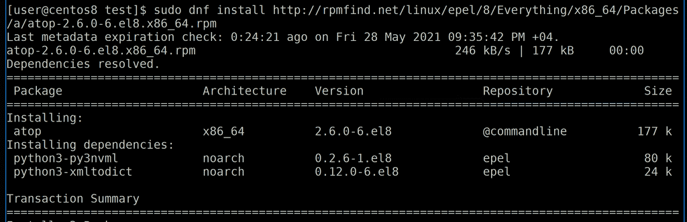
А дальше достаточно в командной строке прописать sudo dnf install и ссылку на rpm файл:
sudo dnf install http://rpmfind.net/linux/epel/8/Everything/x86_64/Packages/a/atop-2.6.0-6.el8.x86_64.rpm
dnf сам скачает этот файл, найдёт для него зависимости и установит пакет. Обратите внимание, как dnf в качестве репозитория для этого файла указал @commandline.
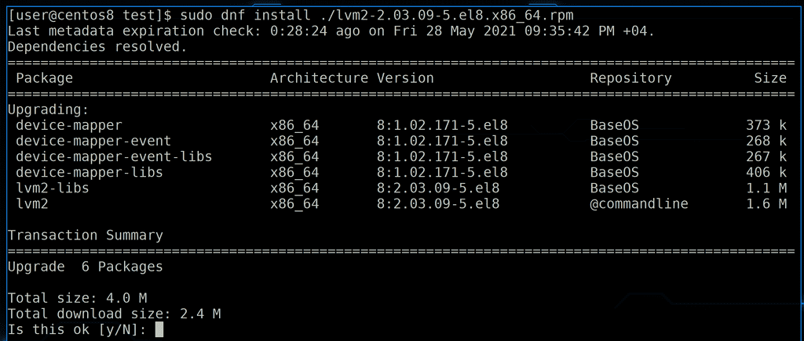
По похожему принципу можно установить скачанный файл - sudo dnf install и указать на файл:
sudo dnf install ./lvm2-2.03.09-5.el8.x86_64.rpm
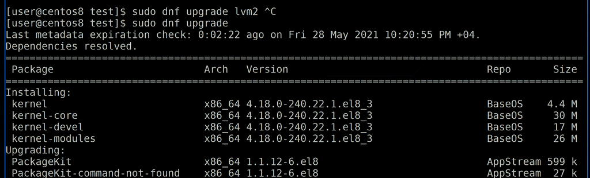
Касательно установки программ разобрались, теперь насчёт обновления. Проверить наличие обновлений можно с помощью:
dnf check-upgrade
Обновлять программы можно с помощью:
sudo dnf upgrade
Если указать после команды определённый пакет, то обновится только он и его зависимости. Если же ничего не указывать, то обновится вся система.
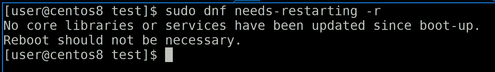
После некоторых обновлений следует делать перезагрузку, но не после всех, поэтому вы можете быть неуверенны, а нужно ли? Можно воспользоваться командой:
sudo dnf needs-restarting -r
она подскажет.
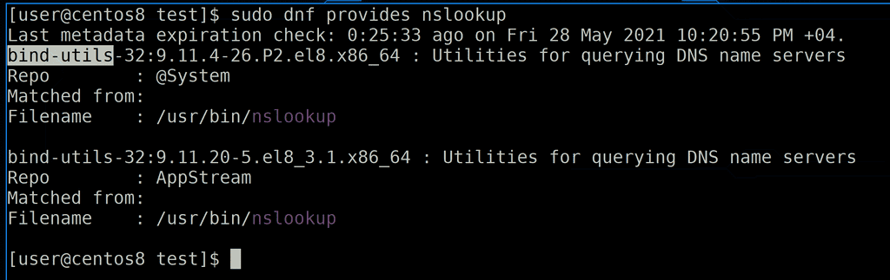
Иногда бывает, что вы помните название программы, но не знаете, в каком именно пакете она находится. К примеру, вы можете помнить команду nslookup, но не знать про название пакета. И пусть даже не команда, а конфиг файл, библиотека или любой файл программы. dnf provides позволяет найти имя пакета, в котором содержится нужный файл:
sudo dnf provides nslookup
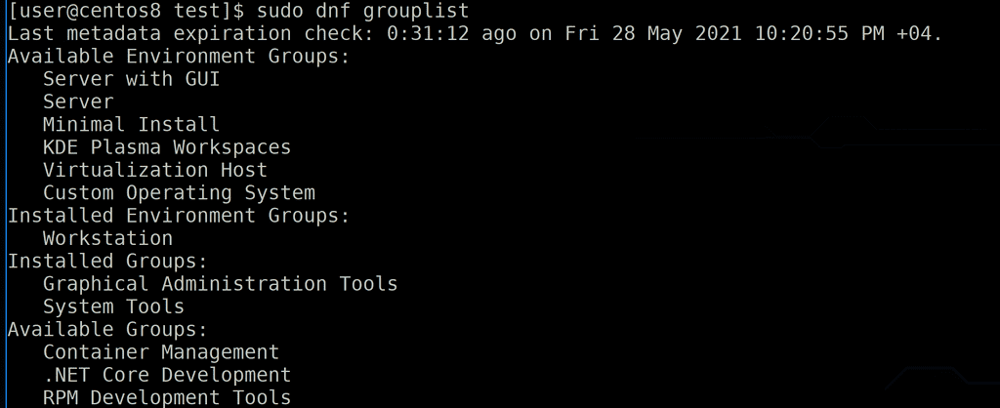
Для удобства некоторые пакеты, которые часто используют вместе, объединены в группы. Посмотреть список доступных групп можно с помощью dnf grouplist:
sudo dnf grouplist
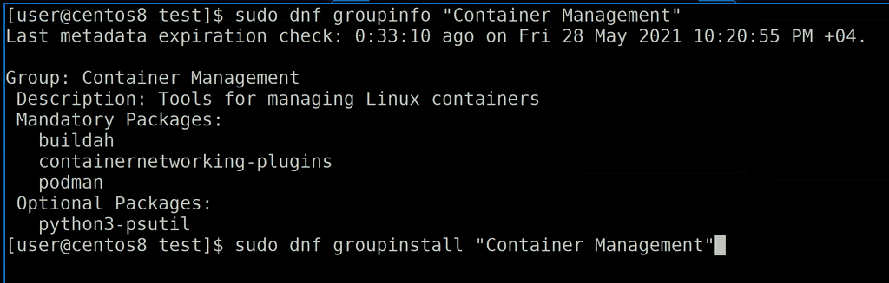
С помощью groupinfo можно понять, какие пакеты входят в группу, а с помощью groupinstall установить все эти пакеты:
dnf groupinfo "Container Management"
sudo dnf groupinstall "Container Management"
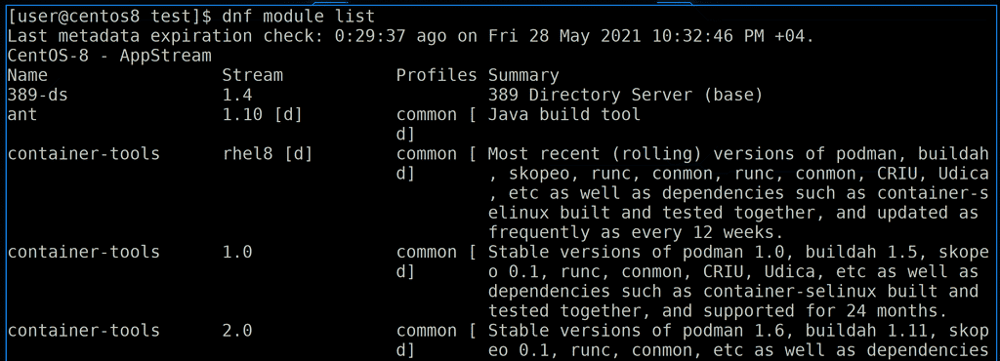
Помимо групп есть модули:
sudo dnf module list
Модули, как и группы, содержат сразу несколько пакетов. Но при этом пакеты в модулях связаны версиями. Обратите внимание, есть несколько модулей container-tools, и в одной версии используются самые актуальные версии пакетов, а в других используется более старая версия пакетов, при этом учтены зависимости и они также не самые свежие.
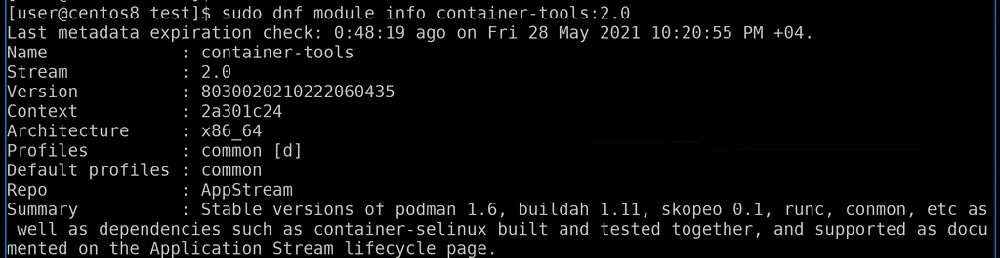
Более детально узнать о каком-то модуле можно с помощью:
dnf module info
указав при этом нужный модуль и его версию:
sudo dnf module info container-tools:2.0
Ну а для установки, соответственно, dnf module install с нужным модулем и версией:
sudo dnf module install container-tools:2.0
Кроме этого dnf хранит историю всех операций:
dnf history
В этой истории у каждой операции есть номера, для примера возьмём 32.
Мы можем детальнее узнать про эту операцию, указав history info 32:
dnf history info 32
Ну и проделанные операции можно отменить или заново применить, с помощью dnf history undo или dnf history redo:
sudo dnf history undo 32
sudo dnf history redo 32
У dnf огромное количество различных возможностей и все я разобрать не смогу:
sudo dnf help
С каким-то функционалом вы познакомитесь со временем, а какой-то вы ни разу и не используется. Но есть документация и, если вам что-то понадобится уточнить, скорее всего в ней вы сможете найти ответ.
Подведём итоги. Сегодня мы с вами разобрали, что такое пакеты, чем занимаются пакетные менеджеры, поговорили о репозиториях и разобрали базовые команды для работы с dnf. Теперь вы знаете, как устанавливать программы, откуда их брать, как обновлять систему и как это всё работает.